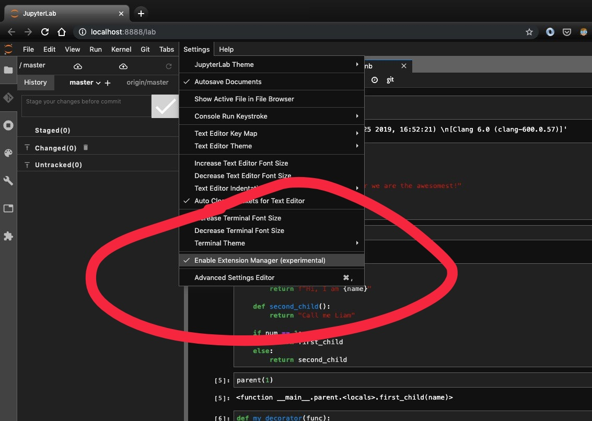
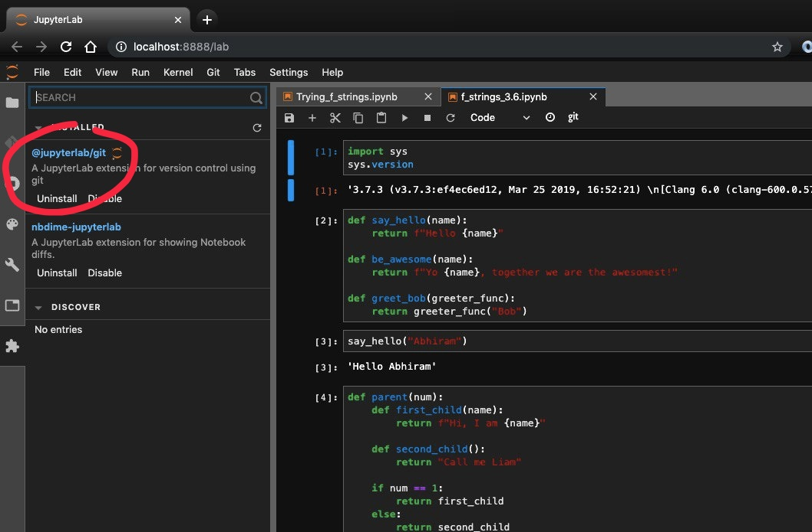
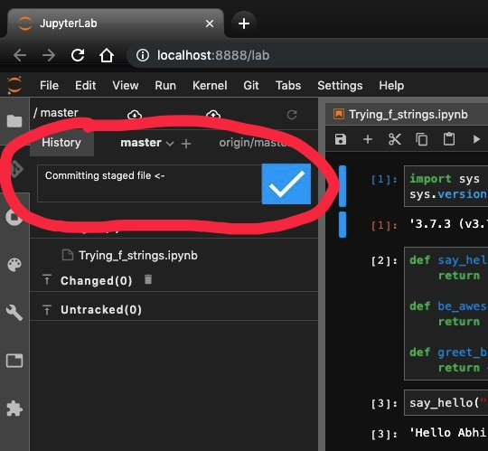
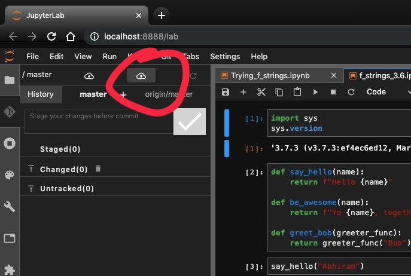

Git extension for Jupyterlab#
Oct 31, 2019
Disclaimer : Extensions in Jupyter-lab are still very much experimental. But this one seems to be working fabulously so far.
jupyterlab-git is an extension that lets you stage and commit changes to notebooks made right from within the Jupyterlab interface.
This is best installed within the confines of a virtual environment, as is anything experimental.
Installation steps -#
a) Ensure that you have the latest version of jupyterlab (=1.2.0 at the time of this writing) and NodeJS(=12.13.0 at this time)
pip install -U jupyterlab
b) Install jupyterlab-git
pip install --upgrade jupyterlab-git
c) Build jupyter
jupyter lab build
d) Enable jupyterlab_git
jupyter serverextension enable --py jupyterlab_git --sys-prefix
e) Run jupyter-lab
jupyter-lab
In Jupyter-lab
f) Enable the Extensions Manager (experimental)

g) Search for and Install jupyterlab-git extension. You’ll be asked to Rebuild Jupyter.

h) Once the Git extension shows up post rebuilding, you can stage any changes made per notebook.

i) Commit post-staging

j) Push!

If you see this, you’re successfully done :)